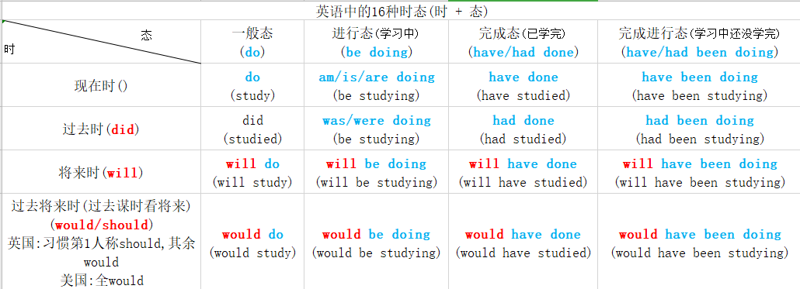

一个公式秒懂考研长难句
长难句 = 主干 + 修饰成分
time: 00:13:05
主干: (5种结构)
主谓: I will leave. //leave不及物动词
主谓宾: I love you.
主谓宾宾: I give you a book. //有些谓语动词需要跟2个宾语,句子才表达完整
主谓宾宾补: Love makes you crazy. //宾补: 补充说明宾语的
主系表(主补): I am a student.
time: 00:22:20
如果区分 双宾 & 宾补?
1.John's father called him a dog.
∧
加上 be, 语义完整, 宾补
约翰的爸爸 骂 他是一条狗. 主谓宾补
2.John's father gave him a dog.
∧
加上 be, 语句不完整, 宾宾
约翰的爸爸 给他一条狗. 主谓双宾
3.I give you a book.
∧
加上 are, 语句不完整, 双宾
4.Love makes you crazy.
∧
加上 are, 语义完整, 宾补
time: 00:28:35
复杂修饰成分: (四种)
1.介词短语 (做定语, 状语)
2.从句 (定从, 状从)
3.下节课讲
4.下节课讲
Pumas are large, cat-like animals which are found in America. //America 美洲
Puma /ˈpuːmə/ n. 美洲狮, 彪马（运动鞋品牌名）
found v. 创办，成立；建造，兴建；根据，以……为基础；熔铸，铸造,产于(一直都有美洲豹, 所以不能是发现, 是产于)
America 美国, 美洲
主干: Pumas are animals.
加前置定语: Pumas are large, cat-like animals.
加定从: ... which are found in America.
time: 00:33:30
长难句 <=> 主干 <=> 主干的谓语动词
找到问题的关键, 问题便已经解决了一半. ——吉德林法则
time: 00:39:10
找出长难句主干谓语动词的三步骤:
1.看标点, 做预判
( :/; /—/, )
介词短语 (Of...)
从句 (When...)
非谓语短语 (Ved sth...)
________, ___________________.
逗号 结论: 如果 介词短语/从句/非谓语短语在前面, 则主语是后半句. 反之亦然.
time: 00:46:05
示例
At the end of adolescence, however,
At引导介词短语, however和句子无关
the brain shuts down half of that capacity,
所以这个是主语
preserving only those modes of thought that have seemed most valuable during the first decade or so of life.
preserving sth... 是非谓语动词短语
time: 00:18:30
分号 ; 后方是 并列句
____主语____; ________并列句___________.
; 分号 相当于 and, but, or. 后方相当于: 并列句
结论: 前方是主语, 后方是并列句.
示例
Progress in both area is undoubtedly necessary for the social,
political and intellectual development of these and all other societies;
主句在上面2句中!
however,
the conventional view that education hould be one of the very highest priorities for promoting rapid economic development in poor countries is wrong.
time: 00:50:30
冒号 : 对后面补充说明, 后方是 同位语.
____主干____: _________同位语__________.
示例
[48词] The researchers' argument stems from a simple observing about social influence:
前方是主干
后方是同位语.
with the exception of a few celebrities like Oprah Winfrey——whose outsize presence is primarily a function of media,
not interpersonal,
influence——even the most innuential members of a population simply don't interact with that many others.
time: 00:53:38
破折号 —— 对前方补充说明
____主干____——_________同位语__________.
示例
[36词] Yet the research revealed that the U.S. factories of Honda,
Nissan,
and Toyota achieved about 95 percent of the productivity of their Japanese counterparts——
主干在上方,
下方是同位语
a result of the training that U.S workers received on the job.
________, _____插入语_____, _________.
________——_____插入语_____——_________.
2个逗号/破折号 中间是插入语(位置性概念), 可以是 定语/状语/同位语
示例
Washington, 名词, 主语
who had begun to believe that all men were created equal after observing the bravery of the black soldiers during the Revolutionary War,
下方是谓语, 上方中间这句是 插入语. 主谓结构
overcame the strong opposition of his relatives to grant his slaves their freedom in his will.
time: 00:58:06
找出长难句主干谓语动词三步骤:
2. 先数谓语动词, 再数连词
谓语动词的3中形式:
1. 各种时态
英语依赖 动词形式的变化 来提现时态
You were, are, and will be my good friend. 你过去,现在,将来都是我的好朋友.
汉语依赖 时间状语 来提现时态(昨天,今天,明天)
is do did
doing 正在做, 不知道'过去/现在'正在做, ing只表示态, 不表示时
done 已完成, 同理
to do 将要做, 同理
Tom doing his homework. //这不是个句子
doing 不是谓语动词, ing只表示状态, 进行态
不知道是 过去正在做, 还是现在正在做, 没有时, 只有态
Tom is doing his homework. //汤姆正在做作业.
Tom was doing his homework. //
is/was 时间, doing 只表名状态
1.谓语动词 各种时态: 时 + 态

谓语动词的 3种形式:
1.谓语动词 各种时态:
have done
have + (状语: 介词短语/副词) + done
large largely done
have in large part done
time: 01:12:23
2.语态
be done //被动语态
be largely done
be in large part done
3.情态动词 + 动词原形
can be
can do
be able to do sth //be able to 相当于can => can do sth
be willing to do sth
be likely to do sth //be likely to 相当于may
time: 01:18:05
[32词] The bodies playing major professional sports have dramatically changed over the years,
谓语动词: have changed, 中间副词是状语.
and managers have been more than willing to adjust team uniforms to fit the growing numbers of bigger,
longer frames.(2008-3)
并列句的谓语动词:
再数 连词
怎么理解连接句子的 从属化连词(When) 和 并列连词(and)?
注意: 只数 连接句子 的连词
1.I came into the woods. 2.I saw many birds.
间接: I came into the woods, I saw many birds. 连接错误!
句子中有2个谓语动词.
1.加并列连词:
I came into the woods and I saw many birds. //一主一并
2.前面加'从属连词'降级成从句 + 主干
When I came into the woods, I saw many birds.
time: 01:28:08
[31词] More recently,
while examining housing construction, //while连接的是非谓语doing短语做状语, 不是句子. 不要这句
the researchers discovered that illiterate,
non-English-speaking Mexican workers in Houston,
Texas,
consistently met best-practice labor productivity standards despite the complexity of the building industry's work.
time: 01:29:33
3.根据独创"主干公式", 推算出主句的谓语动词
连词 n - 1
———— = ————
谓语动词 n
1个连词 => 1个从句/并列句 => 1个从句/并列句的 谓语动词
When I came into the woods, I saw many birds.(一主一从)
I came into the woods and I saw many birds.(一主一并)
time: 01:37:11
Creating a"European identity" that respects
the different cultures and traditions which go to make
up the conneeting fabric of the Old Continent is no
easy task and demands a strategic choice.
动词:
respects 前方有连词that
go to 前方有连词which
is
demands 前方and连词
Thus, //与句子无关, 不看
the anthropological concept of "culture",
like the concept of "set" in mathematics, //2个','中间的插入语, 不看
is an abstract concept which makes possible immense amounts of concrete research and understanding.
谓语动词:
is
makes 前方是从属连词which
[33词] Of all the changes that have taken place in
English-language newspapers during the past quarter-century,
Of引导介词短语
perhaps the most far-reaching has been the inexorable decline in
the scope and seriousness of their arts coverage.
主系表, 表语对主语进行补充. decline下降, 主语far-reaching下降了
time: 01:47:50
In his book The Tipping Point, //In介词短语
Malcolm Gladwell argues that social epidemics are driven in large part by the acting of a tiny minority of special individuals,
=> 上方是主干, 谓语动词: argues, are driven, 连词that, 主谓+宾从
often called influentials, //2个句号中间的插入语
who are unusually informed, //从句不看
persuasive, or well-connected.
Progress in both area is undoubtedly necessary for the social, //主句:Progress is necessary
political and intellectual development of these and all other societies:
分号后面不看↓
however,
the conventional view that education should be one of the very highest priorities for promoting rapid economic development in poor countries is wrong.
time: 01:50:43
今晚课后作业: 运用 "斌斌主干公式法" 找主干
1. I realized that what I said was not exactly what I meant to say.
谓语动词: realized, was, meant
连词: that, what, what
2. The child who is raised in an environment where there are
many stimuli which develop capacity for appropriate responses
will experience greatly intellectual development.
谓语动词: is raised
连词: where
3. More than 60,000 people have purchased the PTKs since they first become available without prescriptions last years,
according to Doug Fog.
chief operating officer of Identigene, which makes the over-the-counter kits.